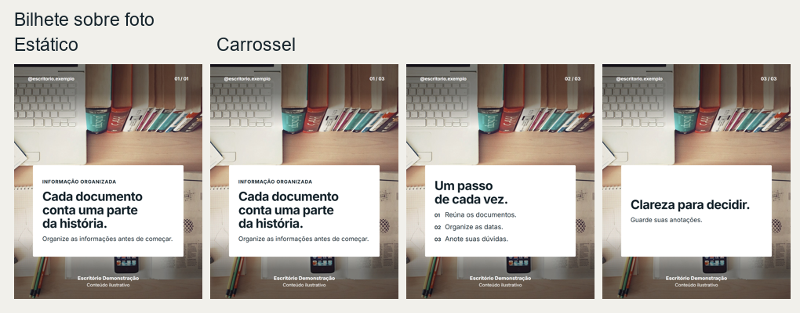
Modelo 011 foto sua
Bilhete sobre foto
Dica ou alerta com uma foto de contexto.
Formatos 4:5 · 1:1 · 9:16
- capa com foto
- foto e texto
- tela dividida
- moldura
- citação
- antes e depois
MaestrIA Marketing · 18 modelos · post único, carrossel e story
Cada modelo aparece aqui como a peça sai de verdade: à esquerda o post único, à direita o carrossel. As peças desta página foram feitas com um escritório de demonstração; no seu computador elas saem com o seu nome, as suas cores e as suas fotos.
Abra o Claude e escreva /maestria:novo-carrossel ou /maestria:novo-estatico,
e diga o nome do modelo que você viu aqui. Para ver as prévias já na sua marca, use
/maestria:cardapio-carrossel.
Você escreve o texto em português, do seu jeito. A máquina desenha e nunca muda as suas palavras.

Modelo 011 foto sua
Dica ou alerta com uma foto de contexto.
Formatos 4:5 · 1:1 · 9:16
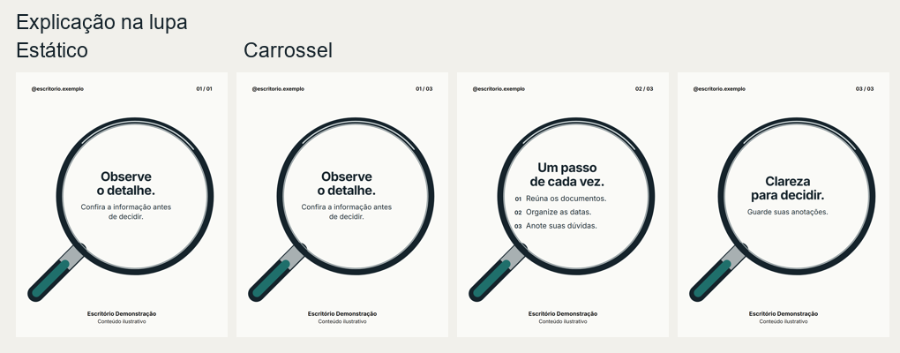
Modelo 02Não precisa de foto
Explicar um detalhe ou critério com um ponto visual de atenção.
Formatos 4:5 · 1:1 · 9:16
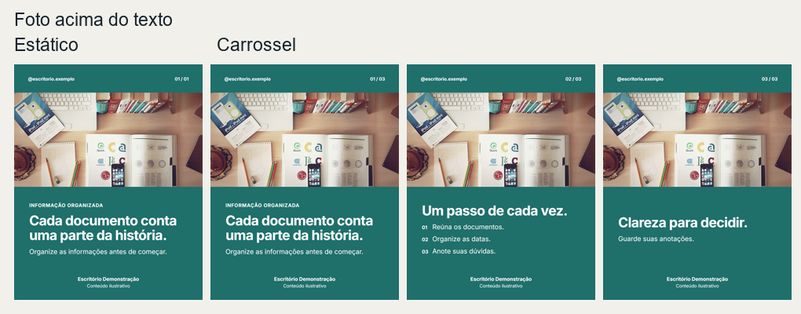
Modelo 031 foto sua
Apresentar o advogado ou um assunto com contexto visual.
Formatos 4:5 · 1:1 · 9:16
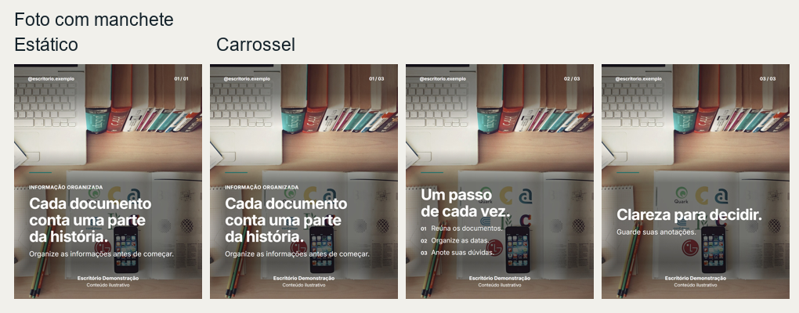
Modelo 041 foto sua
Abrir uma história ou apresentar uma dúvida.
Formatos 4:5 · 1:1 · 9:16
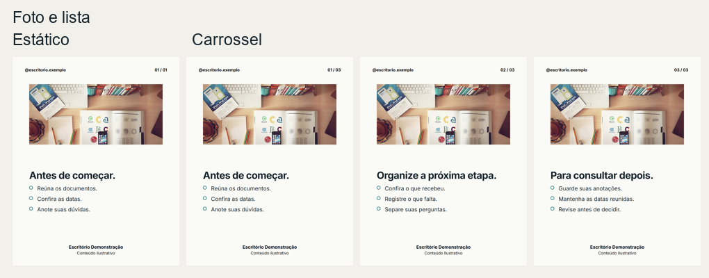
Modelo 051 foto sua
Apresentar sinais, critérios ou perguntas relacionados a uma situação.
Formatos 4:5 · 1:1 · 9:16
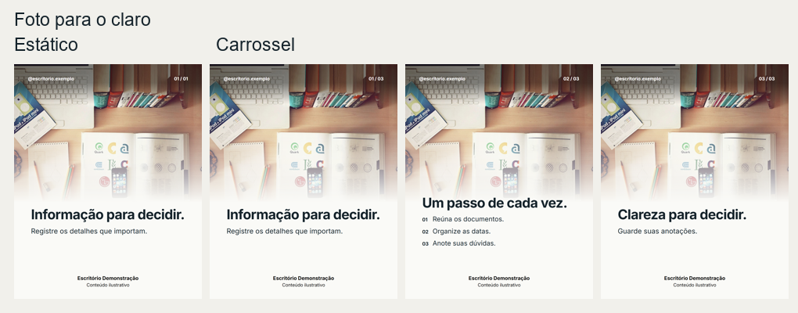
Modelo 061 foto sua
Assunto de contexto visual com título e explicação na parte inferior.
Formatos 4:5 · 1:1 · 9:16
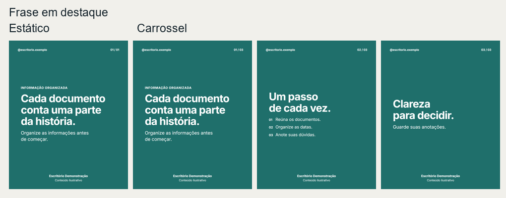
Modelo 07Não precisa de foto
Valorizar uma ideia com composição sóbria.
Formatos 4:5 · 1:1 · 9:16
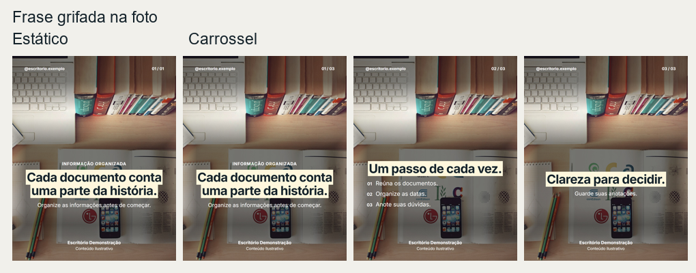
Modelo 081 foto sua
Destacar uma frase curta sobre uma foto.
Formatos 4:5 · 1:1 · 9:16
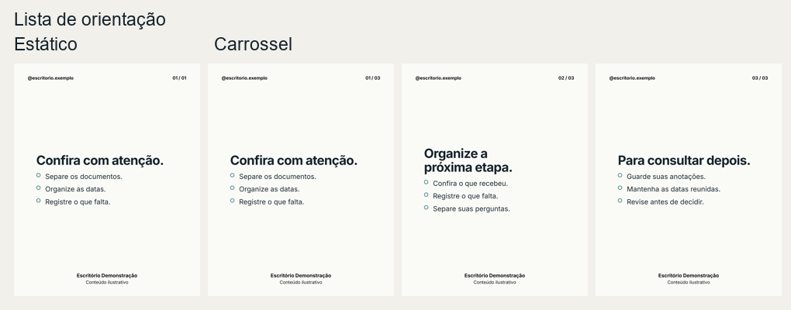
Modelo 09Não precisa de foto
Critérios, documentos e passos que precisam ser escaneados rapidamente.
Formatos 4:5 · 1:1 · 9:16
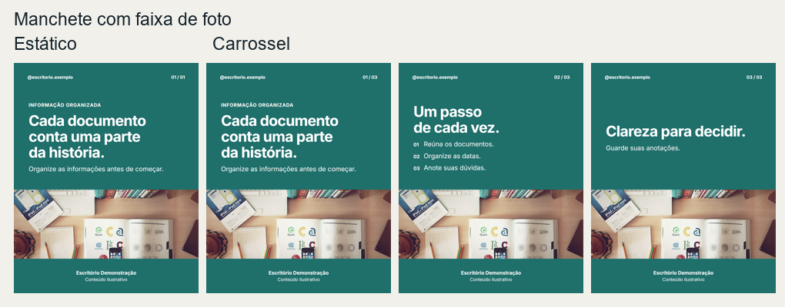
Modelo 101 foto sua
Apresentar um tema com uma faixa de imagem.
Formatos 4:5 · 1:1 · 9:16
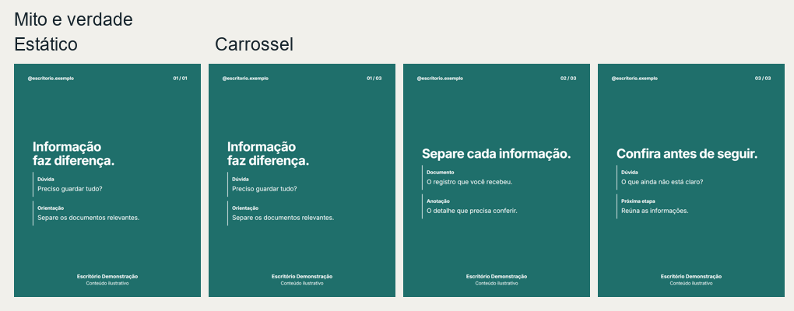
Modelo 11Não precisa de foto
Comparar afirmações e esclarecer dúvidas.
Formatos 4:5 · 1:1 · 9:16
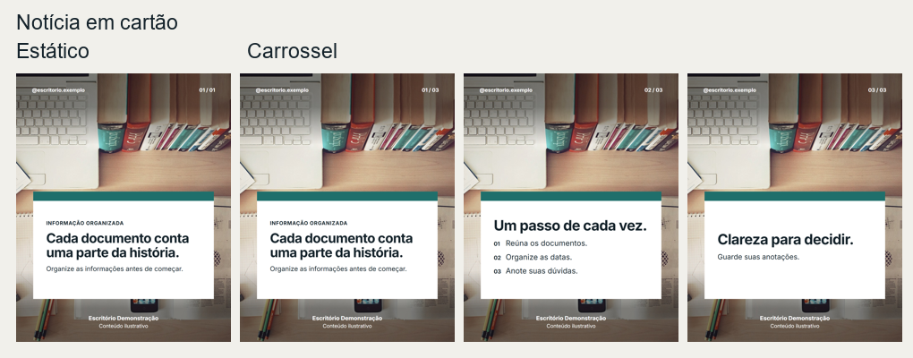
Modelo 121 foto sua
Destacar uma novidade ou alerta informativo.
Formatos 4:5 · 1:1 · 9:16
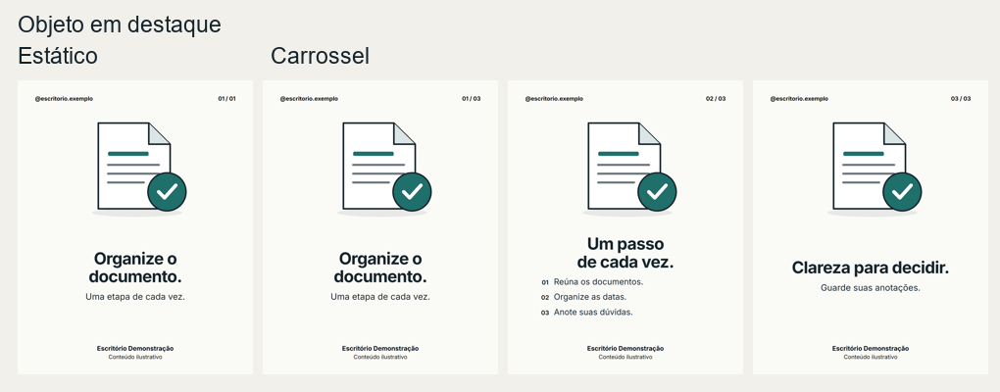
Modelo 13Não precisa de foto
Dar concretude a um prazo, documento, situação ou requisito.
Formatos 4:5 · 1:1 · 9:16
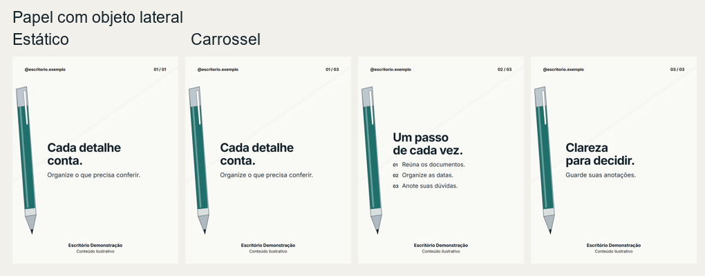
Modelo 14Não precisa de foto
Explicação objetiva, etapa ou critério documental.
Formatos 4:5 · 1:1 · 9:16
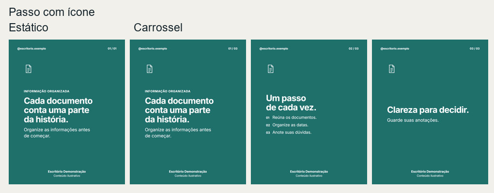
Modelo 15Não precisa de foto
Explicar uma etapa, critério ou orientação.
Formatos 4:5 · 1:1 · 9:16
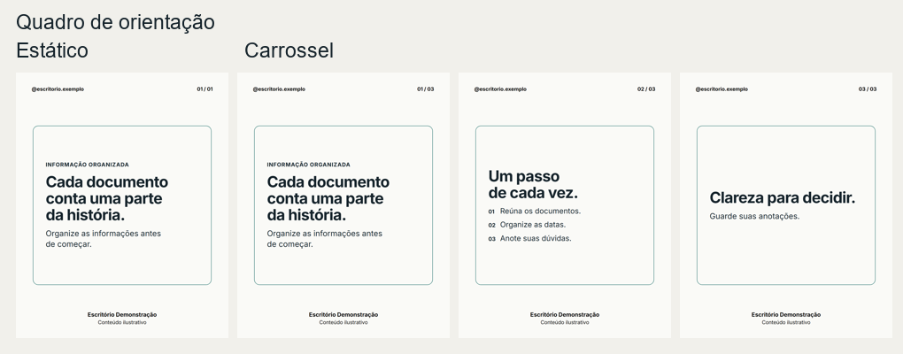
Modelo 16Não precisa de foto
Organizar uma regra, um prazo ou uma sequência.
Formatos 4:5 · 1:1 · 9:16
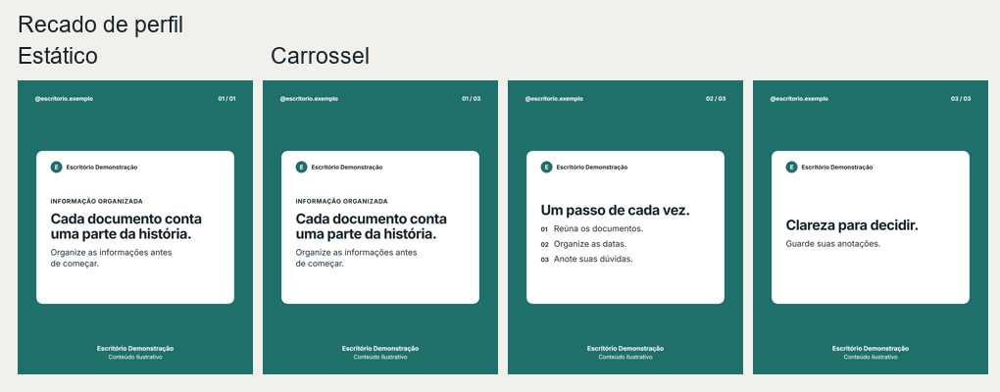
Modelo 17Não precisa de foto
Dar uma resposta curta com a identidade do escritório.
Formatos 4:5 · 1:1 · 9:16
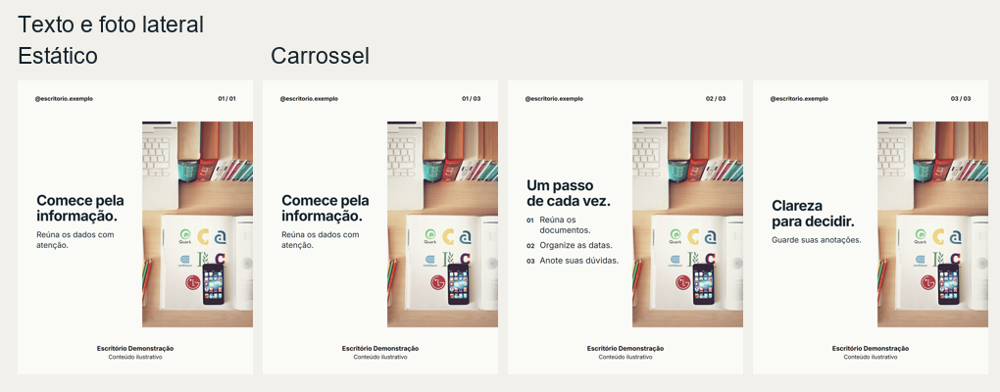
Modelo 181 foto sua
Capa com pergunta ou situação humana e uma mensagem curta.
Formatos 4:5 · 1:1 · 9:16